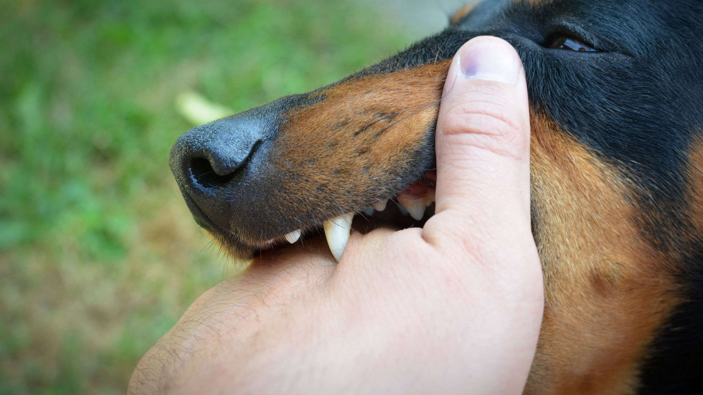

Madison County AL, Dog Bite Lawyer: One-Bite Rule Guide
Most dog encounters are uneventful. A walk past a fenced yard, a package left on a porch, a visit to a friend’s house. That is why a sudden bite catches people off guard. Within hours, the questions start. Who pays for the emergency room? Does the owner owe anything if the dog never bit anyone before? Many people end up searching for a dog bite lawyer near mewhile the wound is still bandaged, hoping for a clear answer.
At The Lackey Law Firm, we have represented injury victims in North Alabama since 1981. The one-bite rule is one of the most misunderstood parts of the law we handle. Alabama does not use one standard for every dog bite. The rule that applies depends mostly on where the bite happened.
We wrote this guide for anyone bitten in Madison County. It explains both legal standards, the filing deadline, the compensation available, and the steps that protect a claim.
Alabama Uses Two Rules for Dog Bite Claims
Alabama applies two standards to dog bites. The first is a statute, Alabama Code § 3-6-1, which makes owners strictly liable in certain cases. The second is the common-law one-bite rule, found in Alabama Code § 3-1-3, which requires proof that the owner knew the dog was dangerous. Where you were standing when the attack happened decides which one applies.
Strict Liability on the Owner’s Property
If a dog bites someone who is lawfully on the owner’s property, the owner is strictly liable. The same is true if the dog chases a person off the property and bites them. Strict liability means the victim does not have to show that the dog ever acted aggressively before. FindLaw’s chart of dog bite laws by state lists § 3-6-1 for Alabama and notes the owner’s property requirement.
The victim must show three things: lawful presence, a bite or attack, and damages. Lawful presence covers invited guests and people with a legitimate reason to be there, such as a mail carrier making a delivery.
The One-Bite Rule Off the Owner’s Property
A bite on a public sidewalk, in a park, or on someone else’s land falls outside the statute. The one-bite rule applies instead. The victim must prove the owner knew, or should have known, that the dog had dangerous tendencies. Lawyers call this “scienter.”
The name is misleading. The rule does not give every dog one free bite. An owner’s knowledge can come from sources other than an earlier bite, such as aggressive behavior the owner saw or heard about.
Proof That an Owner Knew
Because this rule turns on what the owner knew, evidence matters. Useful proof can include:
- Earlier bites or attacks by the same dog
- Lunging, snarling, or other aggression toward people
- Complaints from neighbors or reports to animal services
- Things the owner said about the dog’s temperament
- Warnings the owner gave to visitors
Examples of Where Each Rule Applies
A few everyday situations show how the line is drawn. A delivery driver bitten at the front door, or a guest bitten in a friend’s backyard, falls under the strict liability statute. So does a jogger who is chased out of a yard and bitten on the street, because the chase began on the owner’s property.
A stranger bitten at a public park, or a person bitten in a neighbor’s yard, usually falls under the one-bite rule. Some facts do not fit neatly. A bite that starts on one side of a property line and ends on the other raises questions that a dog bite attorney should review before anyone gives a statement to an insurer.
Rules That Can Weaken or End a Claim
Three parts of Alabama law cause more trouble for dog bite claims than the dog itself.
Contributory Negligence
Alabama follows pure contributory negligence. If a victim is found even slightly at fault, the law can bar recovery. Insurers look closely at what the victim did just before a bite, which is why we gather witness accounts and photographs early.
The Two-Year Filing Deadline
Alabama Code § 6-2-38 sets a two-year deadline for most personal injury lawsuits. A claim filed after that window is barred. Exceptions exist, but they are narrow and technical. Even inside the deadline, waiting can hurt a case, because witnesses forget and evidence disappears.
Limits on Damages When the Owner Did Not Know
Alabama law can also limit what a victim recovers in some on-property cases when the owner had no reason to think the dog was dangerous. This is one more reason the owner’s history with the dog matters. An attorney can tell you whether this limit may apply to your facts.
Injuries and Compensation After a Dog Bite
Dog attacks leave marks that last. The physical and emotional effects can follow a victim for years, and the medical bills can be large, especially when plastic surgery is needed.
Common Injuries, Especially for Children
Typical injuries include puncture wounds, lacerations, permanent scarring, nerve damage, broken bones, and infections such as rabies, tetanus, and MRSA. Many victims also develop post-traumatic stress or a lasting fear of dogs.
Children are hit hardest. The American Veterinary Medical Association reports that about half of dog bite victims are children. A dog’s jaws can reach a child’s head and face, so one bite can lead to several surgeries and long treatment. We push especially hard for full compensation when a child is hurt.
What Compensation Can Cover
Injured people can seek payment for money losses and personal harm:
- Medical expenses: emergency care, wound treatment, antibiotics, surgery, and ongoing care
- Plastic surgery: reconstructive work for scarring and disfigurement
- Counseling: therapy for trauma, PTSD, and fear of dogs
- Lost wages: income missed during recovery and appointments
- Pain and suffering: physical pain from the attack and recovery
- Emotional distress: anxiety and lasting psychological harm
Disfigurement: separate damages for permanent changes in appearance
Payment often comes from the owner’s homeowner’s or renter’s insurance. That is why insurance details are worth collecting at the scene.
What to Do After a Dog Bite in Madison County
The first hours and days shape the evidence you will have later. Dog bites can become infected within hours, so medical care comes first.
Right After the Attack
- Get medical care.
- Identify the dog and its owner.
- Ask for the owner’s contact and insurance information.
- Photograph your injuries right away.
- Report the bite to animal control. In Huntsville and the unincorporated parts of Madison County, Huntsville Animal Services takes animal complaints through Huntsville Connect. Call 911 in an emergency. If the bite happened in another city, contact that city’s animal control or police.
- Get contact details from any witnesses.
In the Days and Weeks After
- Keep every medical record and bill.
- Photograph the healing process as the injuries change.
- Write down emotional effects, including fear, nightmares, and anxiety.
- Do not accept a settlement offer until an attorney reviews it. Early offers are often lower than what a person may be owed, as we explain in our post on common mistakes after an injury.

How We Build a Dog Bite Claim
A Madison County AL dog bite lawyer does the legwork that injured people rarely have the energy for. Our dog bite lawyer team starts by identifying the owner and anyone else who may be responsible, such as a landlord. We then decide which legal standard fits the place where the bite happened.
Next, we collect medical records and bills, look for proof of the dog’s history, and find the insurance coverage that applies. We add up current and future losses, including costs that continue after treatment ends, and present the claim to the insurer. Working with a dog bite attorney early helps because proof of an owner’s knowledge, such as neighbor complaints, is easier to find before memories fade.
We prepare every case as though it will go to trial, and insurance companies know that when talks begin.
Serving Madison County Families Since 1981
Huntsville is the Madison County seat, and our office at 1111 Wayne Road NW, Suite 7, has served North Alabama families for more than 40 years. We have recovered over $70 million for clients across hundreds of personal injury cases. Our attorneys, Gary, Justin, and Jennifer Lackey, handle these matters, and clients get the cell phone number of the attorney working on their case instead of being passed to a case manager.
We also serve clients in Madison, Decatur, and Scottsboro, where we keep a second office at 126 East Peachtree Street. Our Huntsville page also lists how we work with people in the area. We speak Spanish, and we represent both adults and children. We cover all costs up front, and clients owe no fee unless we win.
Common Questions About Dog Bite Claims in Madison County
These are the questions we hear most often from people hurt in the county.
1. How much does a dog bite lawyer in Madison County cost?
We offer a free consultation and work on a contingency basis. We advance all case costs, and clients pay nothing unless we recover compensation.
2. Does the one-bite rule give every dog one free bite?
Not exactly. The rule asks whether the owner knew or should have known the dog was dangerous. Aggressive behavior the owner knew about can meet that test even if the dog had never bitten anyone.
3. Can a landlord be responsible for a tenant’s dog?
Possibly. The one-bite rule can apply to people other than the owner, including a landlord who knew a dog on the property was dangerous. Our premises liability attorneys review these cases one at a time.
4. Will homeowner’s insurance pay for a dog bite?
Owners do not buy dog bite insurance as a separate product. Claims usually go through the liability part of a homeowner’s or renter’s policy, and the policy limits affect what is available.
5. What if a dog bit my child?
The same two standards apply, but the damages often look different. A child may need reconstructive surgery and counseling for years, so a claim should account for those future needs.
6. Do I need a lawyer if the bite seems minor?
A bite that looks small can still lead to infection, scarring, or lasting fear of dogs. A free consultation costs nothing and lets you learn where you stand before an insurer contacts you.
7. How long do I have to file a dog bite claim in Alabama?
Most personal injury lawsuits in Alabama must be filed within two years. Because exceptions are narrow, it is best to speak with an attorney soon after the bite.
Before You Make Your Next Move: Four Things to Remember
A few points matter most for anyone bitten in Madison County.
Location decides the rule. Owners are strictly liable for bites on their own property, while bites elsewhere fall under the one-bite rule.
Time and fault set limits. The filing deadline is two years, and even a small fault on your part can bar a claim.
Early proof carries weight. Medical records, photos, insurance details, and a report to animal control form the base of a claim.
Offers deserve a second look. Have an attorney review any settlement before you accept it.
A dog bite is stressful enough without having to sort out which statute applies. If you were hurt in Madison County, contact us online to set up a free consultation, and we will explain where your claim stands.